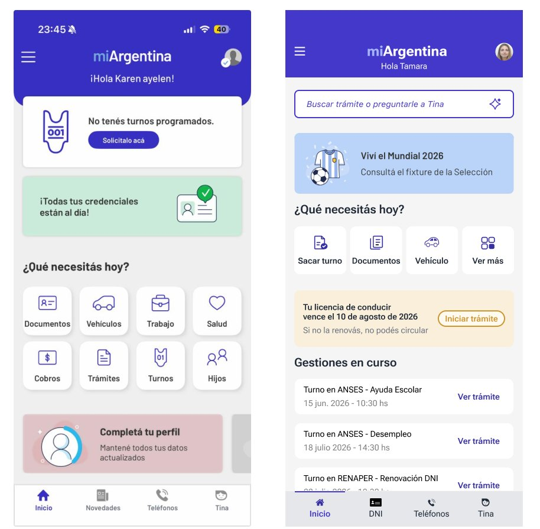
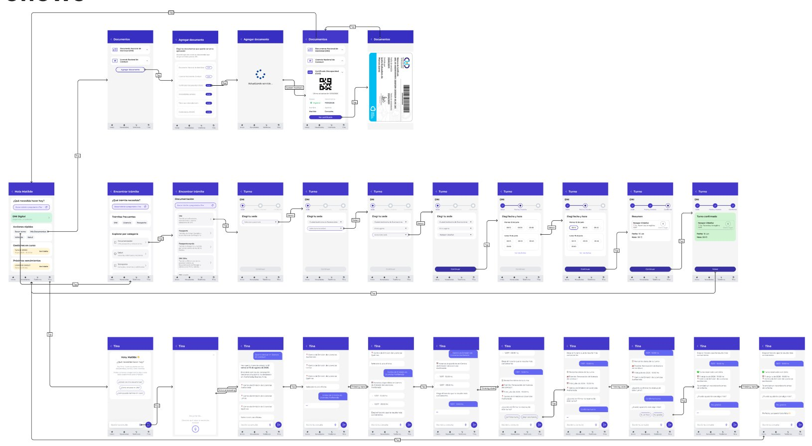
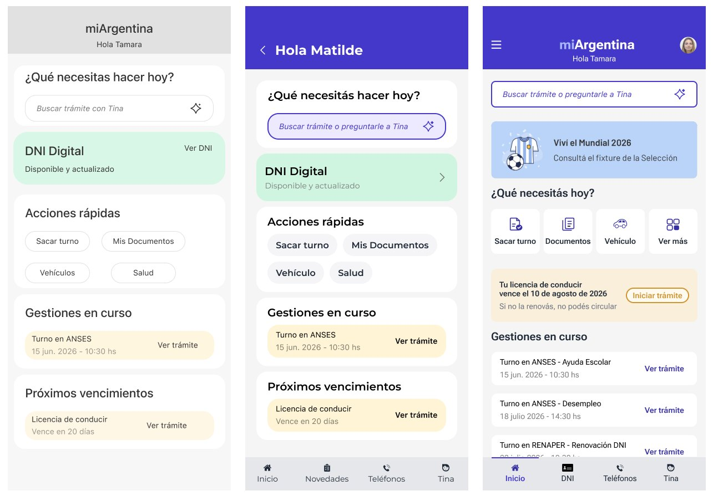
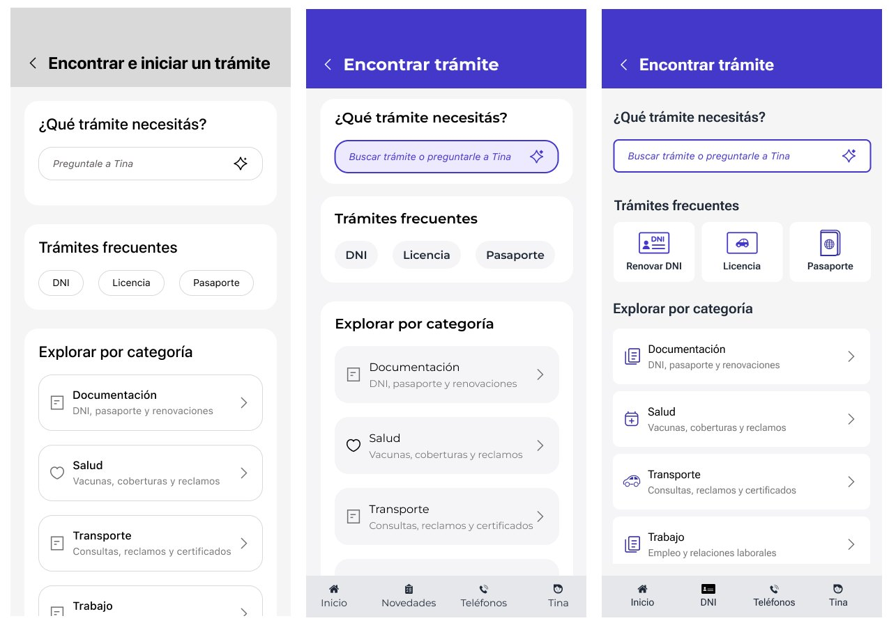
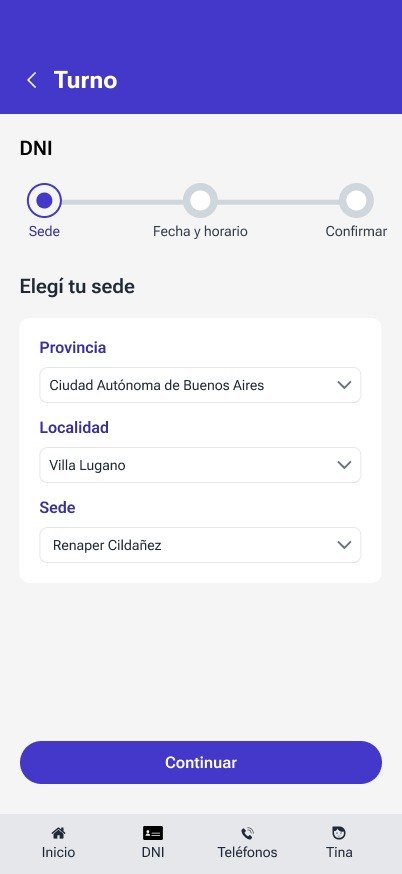
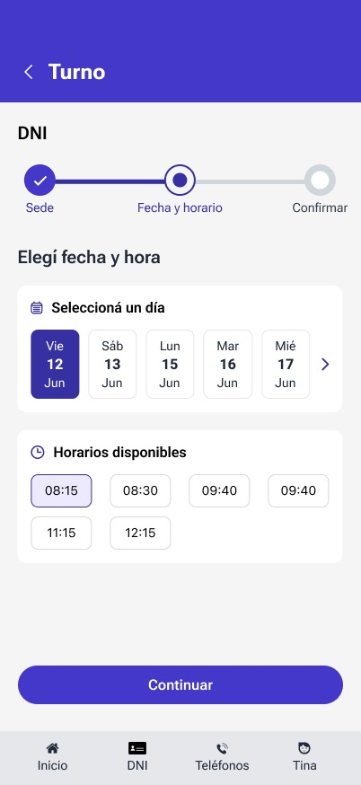
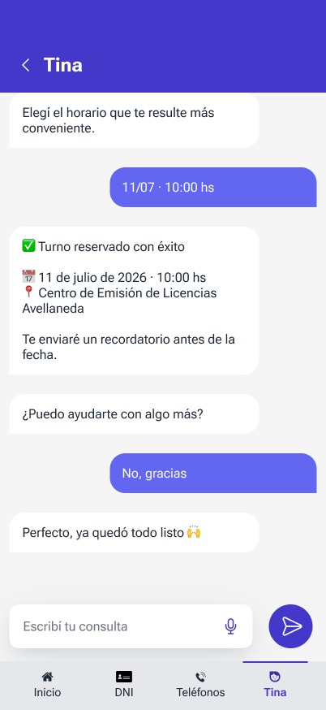

Diplomatura UX/UI · UTN · 2026 · Equipo de 3
Mi Argentina
Rediseño integral de la aplicación oficial del Estado argentino, con más de 20 millones de usuarios registrados: transformamos una navegación estructurada según la lógica institucional en una experiencia orientada a tareas, con búsqueda asistida por IA y validada con usuarios.
Trabajo final
Diplomatura UX/UI · UTN
Proyecto de cierre de la Diplomatura en Diseño UX/UI de la UTN (feb–jul 2026). El objetivo fue ejecutar el ciclo completo de diseño de producto con estándares profesionales: investigación cualitativa y cuantitativa, definición del MVP, arquitectura de información, diseño de interfaz, design system y validación con usuarios, documentado en su totalidad en la presentación final.
+20M
usuarios registrados en la app original
88
participantes en 4 instancias de research y testing
100%
de las tareas completadas en el test de usabilidad
4,2/5
facilidad de uso percibida del prototipo

01
Contexto
Alto alcance, baja satisfacción
Mi Argentina centraliza la identidad digital del ciudadano: DNI, licencia de conducir, turnos, salud, vehículos y cobros. Su alcance masivo contrasta con la percepción de los usuarios: 2,5★ en Android y 1,8★ en iOS, con reseñas que señalan de forma recurrente fallas en el inicio de sesión, la validación de identidad, la gestión de turnos y la recuperación de cuenta.
El desafío no consistía en sumar funcionalidades, sino en reorganizar las existentes para que cualquier persona, independientemente de su nivel de alfabetización digital, pudiera completar sus gestiones de forma autónoma.
02
Proceso
Un proceso de punta a punta, de la evidencia a la validación
Cada decisión de diseño se sustenta en datos u observaciones. Estas fueron las etapas del proceso:
Descubrir
- Desktop research y reseñas
- Benchmark de 3 apps del Estado
- Encuesta a 57 personas
- User personas y journey map
Definir
- Matriz de tendencias y necesidades
- Evaluación heurística
- Tree testing con 10 usuarios
- Matriz de factibilidad y MVP
Diseñar
- Arquitectura iterada
- Task flows y wireflows
- Wireframes → UI → Design System
- Revisión con Leyes UX
Validar
- Test de usabilidad moderado (5)
- A/B test de la Home (16)
- Síntesis e iteración
- Próximos pasos priorizados
03
Investigación
La app está organizada en función de los sectores del Estado. Las personas piensan en tareas.
El desktop research evidenció una arquitectura organizada por áreas administrativas (Salud, Cobros, Hijos) y una Home con múltiples accesos de igual jerarquía visual. La encuesta a 57 personas permitió dimensionar el impacto:
53%
percibe la organización de la aplicación como confusa.
63%
ingresa con un objetivo específico; solo el 7% utiliza los accesos directos.
47%
reportó dificultades para iniciar sesión, la fricción más mencionada.
63%
de quienes intentaron solicitar un turno señaló como principal obstáculo la redirección a un sitio externo con nueva autenticación.
Benchmark: la eficiencia no depende de la cantidad de funcionalidades
Analizamos Mi Argentina junto a Mi ANSES y AFIP/ARCA móvil. Mi ANSES, con un alcance funcional más acotado, ofreció la experiencia más directa. Esta conclusión orientó todo el proyecto: la eficiencia depende de cómo se organizan y comunican las funcionalidades, no de su cantidad.
Los usuarios no requieren más funcionalidades: requieren menos pasos, menos interrupciones y una estructura alineada con sus objetivos, no con la lógica del sistema.
04
Arquitectura
El tree testing nos mostró los puntos de fricción con el usuario
Relevamos la arquitectura actual y la evaluamos con 10 participantes en 5 escenarios reales. Las tareas de acceso directo, como encontrar el DNI o solicitar un turno, presentaron altas tasas de éxito; la fricción se concentró en las tareas que exigían comprender la lógica interna de la aplicación.
| Tarea | Éxito | Tiempo | Observación |
|---|---|---|---|
| Encontrar el DNI digital | 90% | 25s | Recorridos divididos entre el menú lateral y Perfil. |
| Solicitar turno para renovar el DNI | 90% | 27s | Dos rutas posibles para una misma acción. |
| Agregar certificado COVID-19 | 40% | 51s | La etiqueta “Suscribir servicios” no comunica la intención. |
| Consultar aportes laborales | 90% | 16s | Ubicación poco clara de la información laboral. |
| Solicitar asistencia a Tina | 70% | 26s | Solo el 18% accedió de forma directa: predomina la navegación tradicional. |
A partir de estos resultados, reestructuramos la arquitectura en función de los objetivos del usuario: la incorporación de servicios se resuelve dentro de cada categoría, sin pasar por “Suscribir servicios”; el DNI se integra a la barra de navegación, y la búsqueda asistida por Tina se ubica como punto de entrada principal.
05
Definición
Priorización y alcance del MVP
Mediante una matriz de factibilidad, viabilidad y deseabilidad evaluamos más de 15 iniciativas, desde widgets e integración con wallet hasta una vista simplificada para adultos mayores, y definimos un MVP centrado en las fricciones de mayor impacto:
La optimización del inicio de sesión, los recordatorios contextuales y los widgets quedaron planificados para una próxima versión.
06
Diseño
Del wireflow a la interfaz: un proceso iterativo
Desarrollamos los tres flujos del MVP como wireflows completos, incluyendo estados de carga, error y confirmación, antes de avanzar a alta fidelidad.

Wireflows: documentos (arriba), turnos (centro) y Tina (abajo).
Evolución de la Home
A partir de los hallazgos de testeo, reemplazamos los botones de texto por accesos con iconografía, trasladamos el DNI a la barra de navegación para optimizar el espacio y jerarquizamos los vencimientos mediante una tarjeta de alerta.

Wireframe → primera UI → versión iterada post-testing.
Búsqueda de trámites

Búsqueda asistida por Tina, trámites frecuentes con íconos y exploración por categoría.
Tina: trasladar la complejidad al sistema
Lideré el diseño del flujo conversacional de Tina de punta a punta: estructura de preguntas, secuencia, confirmaciones y criterios de derivación. Aplicamos la Ley de Tesler, según la cual la complejidad inherente debe ser absorbida por el sistema y no por el usuario, de modo que una solicitud como “necesito renovar la licencia” concluya en un turno confirmado.



Flujo de turnos y conversación con Tina. La solución se documentó en un Design System propio.
07
Validación
Validación con usuarios
Test de usabilidad moderado con 5 participantes y 3 tareas: solicitar un turno para el DNI, incorporar el CUD a los documentos digitales y renovar la licencia mediante una consulta por voz a Tina. El 100% de los participantes completó todas las tareas sin asistencia; la carga de documentos resultó el flujo más intuitivo.
Fue bastante fácil encontrarlo.
No sabía que Tina estaba acá.
A/B test de la Home
Test no moderado entre sujetos con 16 participantes, asignados aleatoriamente mediante Allocate Monster a la Home actual (A) o a la propuesta (B).
70%
identificó con facilidad dónde consultar una gestión pendiente.
100%
identificó con facilidad dónde consultar una gestión pendiente.
Los resultados no fueron favorables en todos los indicadores: la Home actual obtuvo una mejor valoración en jerarquía visual, ya que el mayor volumen de información incrementó el esfuerzo de escaneo. Este hallazgo, junto con la baja visibilidad de Tina en el test moderado, definió la iteración final: accesos con iconografía, alertas diferenciadas y Tina como buscador principal.
08
Rol y criterios
Rol y criterios de diseño
Participé en investigación, arquitectura de información y diseño de interfaz junto al equipo, y lideré el diseño del flujo conversacional de Tina. El proyecto consolidó criterios que aplico en el diseño de producto:
- Decisiones basadas en evidencia. Cuatro métodos de investigación y dos instancias de validación antes de cerrar cada definición.
- Priorización con criterio explícito. Un alcance de MVP definido mediante una matriz de evaluación, no por intuición.
- Apertura a resultados adversos. El A/B test evidenció una debilidad en jerarquía visual, que se tradujo en la siguiente iteración.
- IA al servicio de la tarea. Tina reduce pasos y traslada la complejidad al sistema, en lugar de sumar una capa de interacción.
Próximos pasos: una segunda ronda de validación para evaluar la jerarquía visual iterada y la unificación de la experiencia entre la navegación tradicional y la conversacional.
09
Prototipo y caso completo
Explorá el prototipo
El prototipo permite recorrer el flujo de turnos, la carga de documentos y la consulta asistida por Tina. La documentación completa del proceso, incluyendo encuesta, user personas, journey map, evaluación heurística, tree testing, guion de testeo y resultados, se encuentra en la presentación final.
Equipo
Equipo 22
Proyecto desarrollado en equipo de principio a fin; la investigación, el diseño y el prototipado son mérito compartido de las tres integrantes.